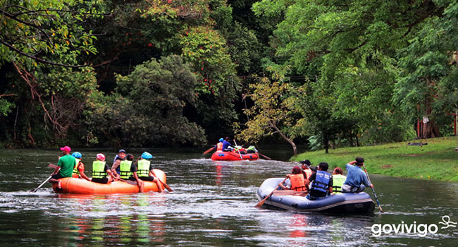
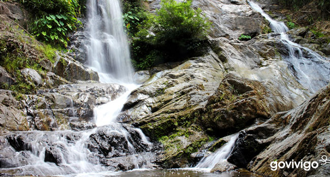
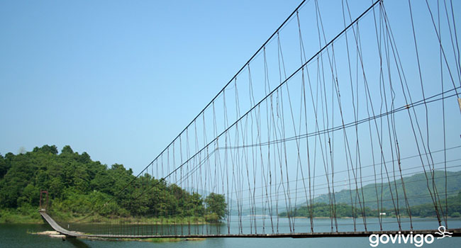
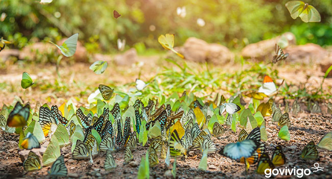
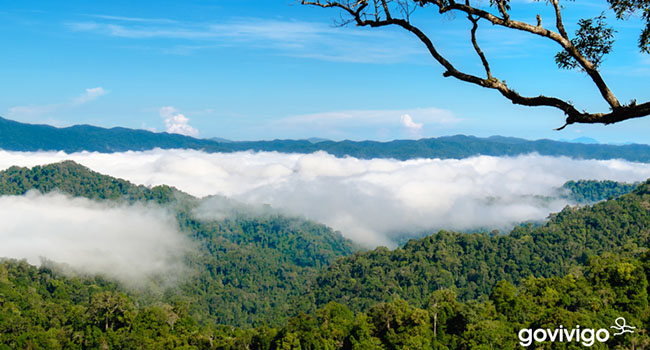
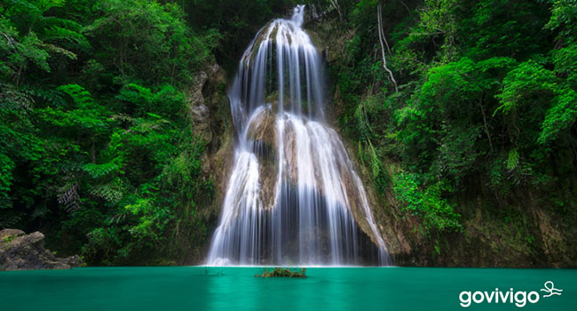

1.ล่องแก่งเรือยาง
เป็นกิจกรรมสุดท้าทายที่ทุกคนพลาดไม่ได้ เมื่อมาเที่ยวที่แก่งกระจานนี้
เพราะจะสามารถสัมผัสถึงความสนุกสุดขั้วของการพายเรือยางขนาดใหญ่ที่ล่องไปตามแม่น้ำเพรชบุรี
ที่ไหลเชี่ยว และตลอดทาง (ระยะทาง 10 กม.)
ทุกคนยังสามารถชมทัศนียภาพที่สวยงามสองข้างทางร่วมกับความสดชื่นจากสายน้ำอันเย็นฉ่ำและความสนุกตื่นเต้นที่จะทำให้ทุกคน
ประทับใจได้อย่างแน่นอน
ที่ตั้ง : ท่าเรือพรหณารีสอร์ท อ.แก่งกระจาน จ.เพชรบุรี
2.น้ำตกทอทิพย์
แวะเที่ยวต่อกับ น้ำตกทอทิพย์ เป็นน้ำตกธรรมชาติขนาดใหญ่ (มีทั้งหมด 9 ชั้น)
ในอุทยานแก่งกระจาน ในการเดินทางไปยังน้ำตกต้องเดินเท้าเข้าไปในอุทยานใช้เวลาเดินทางไป-กลับ
3 ชม. ซึ่งเมื่อไปถึงน้ำตก ทุกคนจะได้เห็นสายน้ำที่ไหลตกลงมาเป็นชั้นสวยงาม
และทัศนียภาพป่าไม้เขียวขจีช่วยสร้างบรรยากาศให้สดชื่นได้เป็นอย่างดี
แต่หากใครที่อยากจะลงเล่นน้ำทางอุทยานเปิดให้นักท่องเที่ยวสามารถเล่นน้ำได้เพียง 2
ชั้นเท่านั้น
เนื่องจากน้ำตกชั้นที่เหลือเส้นทางเดินค่อนข้างลำบากและเข้าไปในป่าลึกเกินไปนั่นเอง
ที่ตั้ง : น้ำตกทอทิพย์ อ.แก่งกระจาน จ.เพชรบุรี


3.สะพานแขวน เขื่อนแก่งกระจาน
เขื่อนแก่งกระจาน เป็นเขื่อนดินกั้นแม่น้ำเพชรบุรี อยู่ในพื้นที่อุทยานแห่งชาติแก่งกระจาน
แหล่งท่องเที่ยว จุดเช็คอินชื่อดังของจังหวัดเพชรบุรี
ที่ใครมาก็ต้องมาถ่ายรูปเซลฟี่เก็บภาพประทับใจ ซึ่งไฮไลท์เด็ดของที่นี่ก็คือ สะพานแขวน
เป็นสะพานเชือกที่มีความยาวถึง 500 เมตร
สะพานนี้สร้างขึ้นเพื่อเป็นทางเชื่อมต่อระหว่างเขื่อนแก่งกระจานกับอุทยานแห่งชาติแก่งกระจาน
นอกจากนี้เพื่อนๆ ยังสามารถมาถ่ายภาพวิวทิวทัศน์สวยๆ เดินเล่นสูดอากาศ นั่งพักผ่อนหย่อนใจ
โดยเฉพาะช่วงเย็นๆ ที่พระอาทิตย์ใกล้ลับขอบฟ้า บรรยากาศจะงดงามชวนหลงไหลมากขึ้นด้วย
ที่ตั้ง : สะพานแขวน เขื่อนแก่งกระจาน อ.แก่งกระจาน จ.เพชรบุรี
4.แคมป์บ้านกร่าง
แคมป์บ้านกร่าง นับว่าเป็นที่เที่ยวแบบมีเอกลักษณ์เฉพาะตัว
เนื่องจากสถานที่นี้เป็นแหล่งรวมตัวของฝูงผีเสื้อนับหมื่นตัว (มากกว่า 200 สายพันธุ์)
ที่มารวมกินโป่ง กินน้ำหวานตามลำธารและขยายพันธุ์ ซึ่งผีเสื้อแต่ละตัวก็มีหลากหลายสีสัน
ส่งผลให้ทัศนียภาพแถวนั้นดูมีชีวิตชีวาสวยงามเป็นอย่างมาก
นักท่องเที่ยวที่อยากจะไปถ่ายภาพความงดงามนี้สามารถมาที่แคมป์บ้านกร่างได้ในช่วงเดือนเมษายน
ถึง เดือนมิถุนายนของทุกปี
ที่ตั้ง : แคมป์บ้านกร่าง อ.แก่งกระจาน จ.เพชรบุรี


5.เขาพะเนินทุ่ง
เมื่อพูดถึงอุทยานแห่งชาติแก่งกระจาน อีกหนึ่งสถานที่ท่องเที่ยวที่ห้ามพลาดเลย คือ
จุดชมวิวที่ “เขาพะเนินทุ่ง” ซึ่งเป็นยอดเขาที่สูงที่สุดในอุทยานฯ ยอดเขามีความสูงถึง 1,207
เมตร จากระดับน้ำทะเล โดยการเดินขึ้นไปนั้นจะใช้เวลาประมาณ 1-2 ชั่วโมงด้วยกัน
เมื่อไปถึงที่ยอดเขาพะเนินทุ่งแล้ว เพื่อนๆ จะได้เห็นวิวทิวทัศน์ที่งดงาม
และทะเลหมอกที่ปกคลุมผืนป่าอันอุดมสมบูรณ์ของเขาพะเนินทุ่งนับว่าเป็นสถานที่ท่องเที่ยวที่สามารถมาสัมผัสทะเลหมอกได้ตลอดทั้งปี
ที่ตั้ง : เขาพะเนินทุ่ง อุทยานแห่งชาติแก่งกระจาน อ.แก่งกระจาน จ.เพชรบุรี
6.น้ำตกผาน้ำหยด
น้ำตกผาน้ำหยด เป็นแหล่งท่องเที่ยวแห่งใหม่ของแก่งกระจาน
โดยน้ำตกแห่งนี้มีความพิเศษที่หินปูนมีลักษณะคล้ายรูปหมวก ตัวน้ำตกเกิดจากผาหินปูนสูงกว่า
20 เมตร และมีน้ำไหลตลอดปี
นักท่องเที่ยวสามารถมาเที่ยวน้ำตกผาน้ำหยดได้ด้วยการเดินเท้าเข้าป่าระยะทาง 1.5 กิโลเมตร
ใช้เวลาเดินชั่วโมงกว่าๆ ก็จะได้ชมความสวยงามของน้ำตกพร้อมเก็บภาพประทับใจ
และเล่นน้ำใสสีเขียวมรกตให้ชุ่มฉ่ำใจกันได้เลย
ที่ตั้ง : น้ำตกผาน้ำหยด อ.แก่งกระจาน จ.เพชรบุรี

แหล่งที่มา : www.govivigo.com